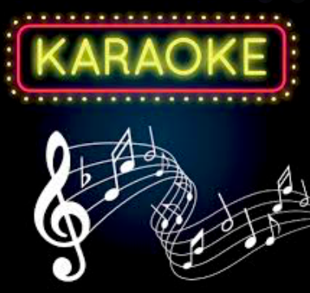

| Hours: | |
| Monday | 11:00am - 7:00pm |
| Tuesday | 11:00am - 7:00pm |
| Wednesday | 11:00am - 7:00pm |
| Thursday | 11:00am - 7:00pm |
| Friday | 11:00am - 8:00pm |
| Saturday | 11:00am - 8:00pm |
| Sunday | 11:00am - 8:00pm |
Attending a concert is typically a fun activity, and it can help to boost your emotions throughout the entire day, if not longer—it’s common for people to feel a lightness of spirit for several days after attending a concert.

If there is one thing you can take away from singing karaoke, it’s that it is very fun. Whether you choose to sing or not, chances are you will enjoy the show. However, taking part in the singing will make it an even more memorable event for you. When we sing, our body releases hormones that that cause us to be happy.
For both performers and listeners, another reason to know the history of music is because it brings music alive and makes it more meaningful. History can be a way of imagining what it must have been like to be a person living in a certain place and time, with experiences in some ways very different from our own.